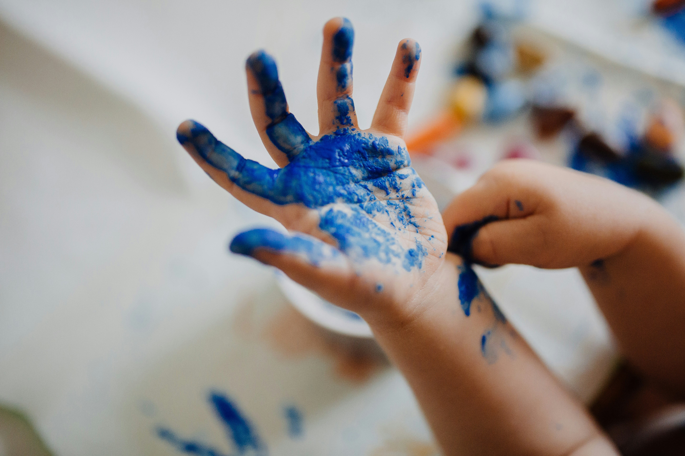

Playgroup
For toddlers to learn through play, songs, and movement.
A place where little minds blossom and grow.

KinderNest Preschool provides a safe, nurturing, and fun environment where children explore, learn, and develop essential life skills. Our caring teachers use play-based learning to spark creativity, confidence, and curiosity in every child.
Learn MoreFor toddlers to learn through play, songs, and movement.
Structured early learning to prepare children for primary school.
Safe, supportive after-school care with creative activities.